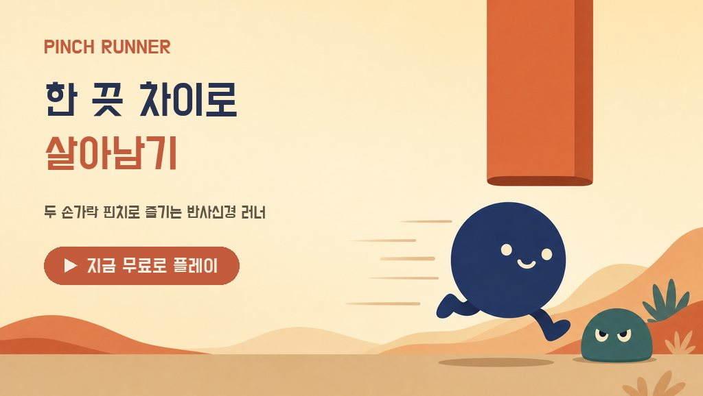

PINCH · SHRINK · CRUSH
두 손가락으로
크기를 바꾸며 달려요.
핀치 러너는 두 손가락을 벌리고 좁혀 캐릭터의 크기를 바꾸는 달리기 게임입니다. 좁은 터널은 작아져서 지나가고, 앞을 막는 적은 커져서 부숴요.
세로 화면 · 두 손가락 조작 · 무료

이렇게 플레이해요
벌리면 커지고, 좁히면 작아져요.
버튼도 조이스틱도 없어요. 손가락 사이의 거리가 곧 캐릭터의 크기입니다. 첫 판에서는 「작게!」「크게!」 안내가 한 번씩 나와요.
-
작아져서 터널 통과
위에서 내려온 터널 아래는 손가락을 좁혀 작아진 채로 지나가요. 통과하면 10점.
-
커져서 적 격파
앞을 막는 적은 손가락을 벌려 더 크게 자라서 짓눌러요. 부수면 20점.
-
아슬아슬하면 보너스
딱 맞게 스쳐 지나가면 5점이 더 붙어요. 시간이 지날수록 빨라지니 최고 점수와 생존 시간, 연속 성공 기록에 도전해 보세요.
알아 두면 좋아요
가입 없이 바로,
기록은 내 기기에.
핀치 러너는 회원가입이나 로그인 없이 바로 시작합니다. 최고 점수와 설정은 기기 안에 저장돼요. 무료 게임이며 인앱결제는 없고, 화면 아래 배너 광고와 원할 때만 보는 부활 광고가 있습니다.
Google Play 앱은 익명으로 하루 점수 기록을 올리고, 이용 통계와 오류 기록을 수집합니다. 토스 미니앱은 기록을 기기에만 남깁니다. 자세한 내용은 앱 안 개인정보처리방침에서 확인해 주세요.
- 분류
- 게임 · 캐주얼 러너 게임
- 출시 채널
- Google Play · 앱인토스
개인정보처리방침과 이용약관은 앱이 출시된 스토어의 앱 정보와 앱 안에서 확인할 수 있습니다.
궁금할 때 먼저 보기
자주 묻는 질문
무료인가요? 광고가 나오나요?
무료이고 인앱결제는 없습니다. 메뉴와 게임 결과 화면 등에 배너 광고가 나오고, 게임이 끝났을 때 원하면 광고를 보고 이어서 달릴 수 있어요. 전면 광고는 없습니다.
광고를 보고 부활하면 어떻게 되나요?
한 판에 한 번만 쓸 수 있어요. 광고를 끝까지 보면 화면의 장애물이 사라지고, 점수와 시간은 그대로 이어집니다. 5초 안에 고르지 않으면 그대로 끝나요.
손이 작거나 화면이 작아도 할 수 있나요?
할 수 있어요. 플레이할수록 내 손가락이 벌어지는 폭에 맞춰 조작이 조정되고, 설정에서 핀치 반응 속도를 느림·보통·빠름 중에서 고를 수 있어요.
소리와 진동을 끌 수 있나요?
설정에서 배경음악, 효과음, 진동을 각각 켜고 끌 수 있고, 다시 켜도 설정이 유지됩니다.
기록을 친구에게 보여 줄 수 있나요?
게임이 끝난 화면의 SHARE 버튼을 누르면 점수가 담긴 결과 카드 이미지를 만들어 공유할 수 있어요.
어디서 할 수 있나요?
Android 휴대폰에서는 Google Play 에서 받을 수 있고, 토스 앱 안의 미니앱으로도 즐길 수 있습니다. iOS 앱은 없습니다. 기기 언어에 따라 한국어 또는 영어로 나옵니다.
도움이 필요할 때
문의 안내
앱 이용에 관한 궁금한 점이나 도움이 필요한 내용을 이메일로 보내 주세요.